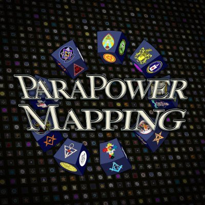

ParaPowerMapping
Exploring parapolitics, intelligence operations, psychological warfare, and hidden power structures.
About The Podcast
Hosted by Klonny Gosch, A cork board podcast mapping the interlocks & hidden passages of the capitalist elite. Moneyed fams, secret societies, intel networks, & trafficking rings.
Support on Patreon